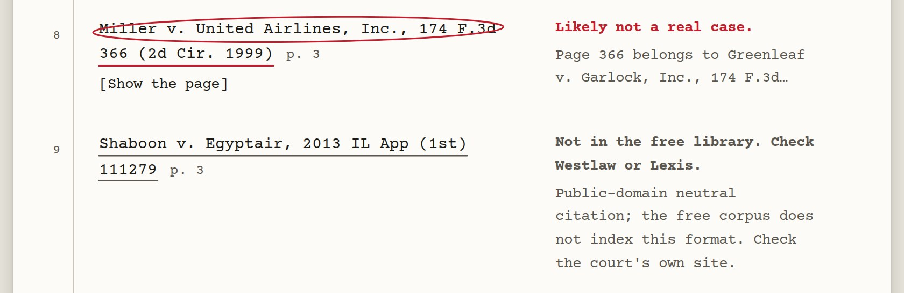
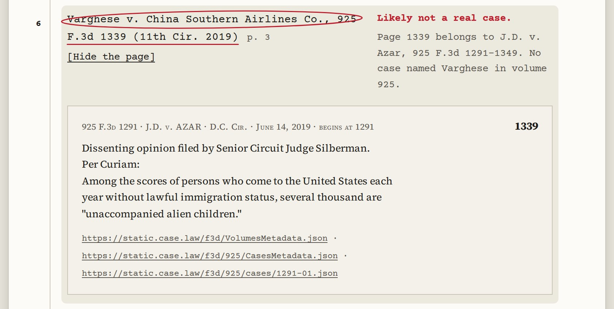

LexHack 2026 · third place
Clerkmark
Fake case citations, caught at the intake desk. It tells a citation that is likely not a real case from one the free law library simply does not have.
clerkmark.vercel.app · github.com/itssaharsh/clerkmark
The problem
2,079
court decisions have found hallucinated or misquoted citations in filings.
1,196
of them involve someone representing themselves, with no lawyer.
Damien Charlotin, AI Hallucination Cases database, as of 25 September 2026. Court staff find these by looking up every cited case by hand.
The idea the product is built on
Absence is not evidence
of fabrication.
A free lookup says “not found” for a case that was invented. It says exactly the same thing for a real case the database does not happen to hold.
If intake staff read both as fake, the person who gets hurt is the filer who had no lawyer. Keeping those two apart is the whole product.
Princeton CITP found that weaker models “treat absence from CourtListener as evidence of hallucination” (arXiv 2606.21155, August 2026).
Two rows, two different answers

Every call shows its work

Measured, on every run
20 of 20citations with known answers land in their expected class.
0 of 11real cases marked likely not real. This is the number we optimised for.
23 in 4.1 scitations checked in a recorded live run.
380automated tests, plus a PASS or FAIL script that proves the demo path offline.
scripts/eval.py and scripts/verify.sh, 27 September 2026. The Evaluation tab scores the current run, not a stored result.
“Can’t you just ask a chatbot?”
We measured it instead
of arguing.
16 / 20same filing pasted into a chat model, first run.
15 / 20second run, same prompt, temperature zero.
15 / 20answers that were identical across the two runs.
It called a fabricated case real, and confirmed two quotes we had deliberately altered. A grounded model would score higher. It still cannot know whether a citation is missing because it was invented or because the corpus stops in 2019.
What it cannot do
United States case law only. The free library stops around 2019, so newer real cases read not in the free library, never “fake”.
No statutes, no court rules, no short forms, no pin pages. Scanned filings without a text layer are not read.
A triage aid, not a finding. Every limit above is printed on the product itself, not just in the write-up.
What’s next
1CourtListener as a live second source, so post-2019 cases resolve instead of reading “not held”.
2Statutes and court rules, which are listed as “not checked” today.
3The memo rewritten for the filer, so a self-represented person can fix the brief instead of being sanctioned for it.
clerkmark.vercel.app · github.com/itssaharsh/clerkmark · built on the Caselaw Access Project and Free Law Project’s eyecite. Thank you.